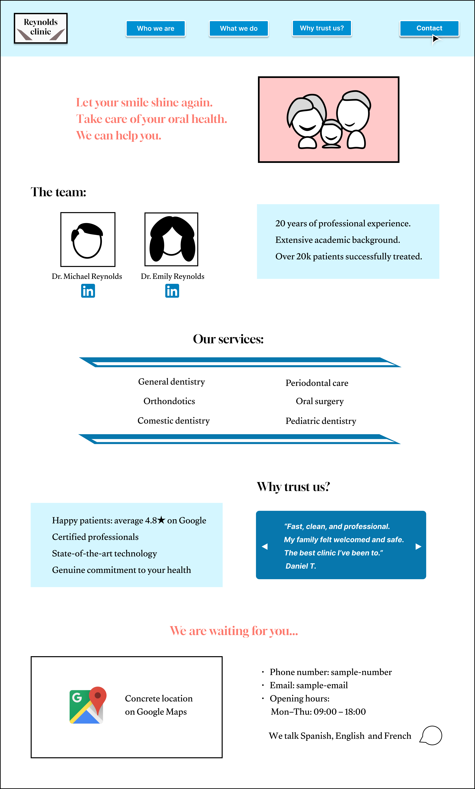
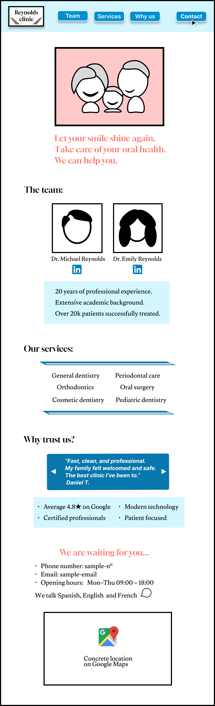

Dental clinic landing page
Introduction
This project focuses on designing a responsive landing page for a fictional dental clinic, that currently lacks an online presence. Since the clinic is in a growth phase and approximately a quarter of its clients are not tech-savvy, the primary goal was to create a simple, functional and visually appealing interface. Users should be able to get the information they need quickly and effortlessly. For this purpose, I used Figma.
UI Design justification
Color palette
The target values to convey were: professionalism, cleanliness, trust and health. I chose a color palette based on: white, black, soft blues and coral. White and soft blues are associated with hygiene and calmness, black conveys professionalism and the colar tone resembles the natural color of healthy gums, adding a welcoming touch to the layout.
Typography
I selected Gloock and Gulzar as the primary typefaces, to reinforce the professional visual identity of the dental clinic. Gloock is characterized by its elegant curves and strong strokes, which makes it suitable for the headings and key textual elements. Gluzar, on the other hand, is simpler and enhances readibility, so it was applied in the body text. Both share similarities - visual harmony is maintained.
For call-to-action buttons, I used Inter, a modern sans-serif typeface, very legible, which invites for interaction.
Images and iconography
The logo and the images were created by me. The logo initially began as a representation of the top view of a molar, but it evolved into a simpler version consisting of oblique rectangles representing vertical shadows. This minimal adaptation worked better for mobile responsiveness while aligning with the elegance and simplicity of the overall design.
Since this is a fictional project, I didn’t have access to real images of a dental clinic. Instead, I represented the types of images I would include in each section. The first image, for example, could feature a smiling family to create a welcoming first impression. The following two images would ideally show portraits of the clinic’s doctors to help build trust.
UX Design justification
Layout and user flow
The structure follows a logical and easy-to-navigate order that prioritizes quick access to essential information without overwhelming the reader.
The header includes the logo and buttons that link to the corresponding sections on the same page. The “Contact” button features bold text, is accompanied by a mouse pointer icon, and is positioned at the top right to draw attention and encourage user interaction.
The hero section displays a happy and healthy family, reflecting the clinic’s core patients and values. Its message, summarized in three lines, reinforces the promotion of dental health and the offering for help.
In a clinical environment, it is crucial for visitors to know who is in charge and why they can be trusted. The team section addresses this by showcasing the doctors’ qualifications, personal photos, and professional experience. Trust is further reinforced by a dedicated reviews section, featuring patient testimonials and highlighting the clinic’s key strengths.
Finally, the contact information is placed at the bottom of the page, following a common and intuitive structure. Since the website is short and this setion is inmmediatley displayed when pressing the contact button at the top, this placement should not hinder accessibility.
Mobile responsiveness
For the mobile version, content is stacked vertically and the buttons texts are simplified, ensuring a good experience.
Desktop design

Mobile design
